生成时间：2026-11-08T12:10:11+08:00
今日保留论文数：15
内容构成：今日新文 15 篇；补充推荐 0 篇；经典旧文精读 0 篇
阅读分层：重点精读 2 篇；相关简报 13 篇。精读依据科学贡献筛选，简报保留方法、结论及局限。
数据源警告
- 本次有 1 个数据源访问异常；完整错误已保留在运行日志中，日报只显示摘要。
- 其他来源：1 个异常。
- 主要错误类型：其他 1 次。
高能天体物理重点
1. Cosmic rays in galaxy halos I: the circumgalactic transport rate and a dynamically significant cosmic-ray reservoir
- 来源：arXiv / astro-ph.HE
- 链接：https://arxiv.org/abs/2610.38061
- 作者：Roland M. Crocker, Mark R. Krumholz
- 公告 / 来源日期：2026-10-30
- 阅读层级：重点精读
- 评分：novelty 8/10，importance 8/10，relevance 9/10，final 9.35/10
- 推荐理由：共同约束外银河CR、各向同性伽马背景、eROSITA CGM冷却和压强，揭示快速逃逸和慢储库两分支。
中文题目：从 GeV 背景到星系晕热平衡，宇宙线质子去了哪里
做了什么：成星盘里的超新星把部分爆炸能量转成宇宙线质子。本文追踪这些质子从盘逸入星系周介质（CGM）后怎样扩散、损失和滞留，并把银河系外盘的气体伽马发射率、1–10 GeV 各向同性背景、星系晕软 X 射线、气体静力支撑和激波禁闭五项约束放在同一模型里。作者改变 CGM 气体斜率、扩散强度和外边界，寻找可以同时满足它们的区域。
在较慢输运的解中，今天质量为 $10^{12}M_\odot$ 的晕自 $z=8$ 以来累计产生约 $4.1\times10^{58}$ erg 的质子能量，其中 $2.6\times10^{58}$ erg 到达 CGM，约 $10^{58}$ erg 至今留在其中。星系晕可贡献背景伽马射线，也可能靠流动不稳定性加热约银河系质量的气体晕。允许的快速逃逸解给出截然不同的图景，因此这些数字应读作多条件筛选下的模型预言。
为什么重要：同一批逃出盘的质子既提供强子伽马光子，也会对晕施压或转交热量。只用一条亮度曲线时，提高靶气体密度、增加滞留时间或改变银河前景模板都可能解释较亮信号。作者逐项排除会让外盘、背景、热辐射或力学过载的解，使这种退化有了可检查的来源，也说明仅靠背景亮度无法确定宇宙线的去向。
理论 / 观测 / 仪器方法价值：可复用的是从成星史、盘内量热和 CGM 靶气体开始，给每个晕做输运及能量收支，再把河外整体积分和太阳位置的银河晕前景分开预测。对本地扩展伽马源建模时，应分别记录径向气体分布、受遮罩的视线模板、背景吸收进前景的比例，以及盘内损失导致的输入谱变化。
为什么应该关注：面向 LACT 或其他甚高能观测，本文提供一个把宿主晕的几何与物理损失分开的建模范例。可以先用它提出扩展强子模板和径向对照区，再使用能量依赖扩散、实际点扩散函数和前景拟合检验可测性。文中 $D$ 是以 GeV 质子群为主的有效参数，TeV 晕的尺度、亮度和谱仍需另算。
展开详细解读：文章讲解、背景、理论、重点章节、图表与相关工作
文章详细讲解
先从盘里扣除损失。 作者把星系的成星、气体质量和尺度随晕增长关联，以核心坍缩超新星提供质子。盘内先损失能量，余下部分才作为 CGM 的内边界通量。盘量热效率来自 CONGRuENTS 的能量依赖结果，压缩成针对背景能段校准的有效数值。
在同一套模型中切换外边界。 TrappingMax 与 TrappingMin 都在维里激波处设零扩散通量，但后者把部分气体放在 CR 禁闭范围之外。FreeEscape 将范围延至气体闭合半径，外缘能量密度设为零；它既能代表扩散慢而当代尚未逃出很多的情形，也能代表能量迅速逸入星系际介质的分支。
五项检查各量不同。 伽马背景给全局辐射上限，银河外盘发射率限制太阳半径处的质子能量密度，软 X 射线限制可以容纳的流动加热，静力条件检查压力梯度，激波条件检查外缘 CR 压力。图 5 依次叠加这些剪裁，图 6 把它们在三种边界间对齐。
能量账分清分母。 模型分别记盘内强子损失、晕内强子损失、晕内流动加热、逃向星系际的部分及现存储能。图 7 的上轴以进入 CGM 的能量为分母，下轴以全部产生为分母。图 10 比较的是每秒加热和辐射，而储能与引力束缚能之比回答能否显著影响支撑。
关键结果是怎么做出来的
1–10 GeV 的背景上限采用 Fermi-LAT Model A，作者把统计误差上侧的三倍和系统误差上侧都加到中心值。原文又将银河晕从最暗未遮罩方向的近各向同性量到未遮罩区单极量处理成上下估计，体现一部分亮度可被银河前景模板吸收。
慢输运区域的典型 $\mathcal K=0.05$–0.2，在本地银河系质量晕对应 $D\simeq(2$–$7)\times10^{29}$ cm²/s，扩散横穿时标约半个到两个哈勃时间。慢扩散的 FreeEscape 仍能保留能量，显示边界允许逃逸与实际已经逃出属于不同问题。
以入晕能量计，除快速逃逸区，约 45% 变成流动加热、27%–55% 留在晕里，强子损失约 10%。逐通道中位数和参数范围独立汇总，不能直接逐个端点相加。快速逃逸区的能量主要进星系际空间，晕伽马与储能都相应变小。
在作者选来解释观测背景的慢输运子区，外星系盘贡献约 60%，该比例由模型校准定下；外星系 CGM 约 10%–20%，银河自身 CGM 常见约 25%，范围约 10%–50%。这些比例依赖模板和子区选择，端点并非同一组拟合结果。河外主要贡献来自现今约 $10^{12}$–$10^{13}M_\odot$ 的晕，红移分布在 $z\sim1$ 附近较强。
在银河系质量处，代表解的晕 CR 储能约为气体束缚能的 24%，各背景相容区域约 12%–32%。流动加热在相近质量也能接近经能段修正的 X 射线损失；更大晕的束缚和冷却预算增长较快。这提供了检验 CR 反馈的量级，仍需将气体动力学与输运自洽耦合。
快速 FreeEscape 仍可通过上限；它让未由星系盘提供的背景需要其他源补足。作者以此提出慢解在统一解释上更经济。若采用不同成星盘校准、背景源族群或径向扩散律，允许区和相对解释都会移动。
展开背景、理论、公式、模型和章节导读
背景知识
超新星注入。 恒星形成率为 CR 注入提供可随宇宙时间追踪的近似量。核心坍缩事件率还依赖初始质量函数；每次爆炸转入质子的比例则是额外的物理输入。
盘量热与晕量热。 高密度盘里质子发生非弹性碰撞，把能量分给次级粒子。出盘后的粒子进入稀薄得多的环境，亮度由密度与驻留共同决定，所以更淡的晕仍可能储存大量能量。
为何关注 GeV 背景。 中性 pion 衰变产生伽马射线。许多未逐个分辨的晕叠加后，可混进各向同性背景；银河晕还绕着观测者分布，方向结构会与银河前景发生模板混合。
热与力学是另一条证据。 CR 流动激发波，波耗散把能量加热给热气体。CR 压力梯度则直接抵抗部分重力，两者一个量功率、一个量力密度，可在几乎无明显强子辐射的区域仍有影响。
基础理论 / 方法脉络
作者用球对称晕跟踪相对于维里尺度的位置。相同总气体质量下，密度斜率较大可把更多靶集中在内区，改动同一质子群的损失率和径向伽马亮度。
扩散项把高能量密度区的质子能量摊平，源端通过内边界供能。强子损失随局域靶密度增加，流动损失随压力梯度增大；原文保留流动转热项，将主要空间输运用有效扩散近似。
若按各向同性、相对论性群体取 $P_{\rm c}=u_{\rm c}/3$，即使某半径的 CR 能量占比不显眼，陡峭的径向变化也可能提供显著压力梯度。因此作者在能量总量之外检查局部静力平衡。
观测到的 X 射线为有限软能段，作者用模型假设把它换成总热辐射预算。银河系局域的外盘伽马发射率约束由同一能量密度和质子谱投影得到，光度上限与热上限的物理含义不同。
公式与推导
气体质量设定靶密度。 原文式 11–12 的关系可写成下式。$R=r/r_{\rm vir}$、$R_0$ 为无量纲半径，$\rho_0$ 由 CGM 质量闭合确定，外积分端由相应气体模型确定。
用星形成率把气体模型接到源项。 原文式 14、17 中，$f_{\rm cal}$ 是到达外盘前盘内已损失的能量比例，$\dot M_\star$ 以质量每时间计。$\dot E_{\rm inj,CGM}$ 为入晕质子功率。
传输时间和强子损失。 原文式 20–21 给扩散系数 $D$ 与碰撞能损时标 $t_{\rm pp}$。$c_s$ 是气体声速，$\mathcal K$ 无量纲，$c$ 为光速，$n_e=\rho_{\rm g}/(\mu_e m_p)$ 作为作者有效靶密度，$\sigma_{\rm pp}$、$\kappa_{\rm pp}$ 分别是有效截面、非弹性系数。
求半径与时间上的能量密度。 原文式 18，$u_{\rm c}$ 单位 erg cm$^{-3}$，$v_A$ 为 Alfvén 速度，作者基准 $v_A=0.1c_s$。最后一项来自 $P_{\rm c}=u_{\rm c}/3$，作为流动损失和气体热源。
边界决定能否离开。 以下是原文外边界的有量纲等价表述；在禁闭模型的 $r_{\rm vir}$ 处没有扩散外通量，允许逃逸时在 $r_{\rm clos}$ 处固定密度为零，梯度可产生有限外通量。
把解转成可比亮度。 以下据原文式 32 和 §3.4.1 重写。$\xi_\gamma\simeq1/3$ 是强子损失进光子的近似比例；$f_{\rm bolo}^{\gamma}(z)$ 是发射谱红移到观测 1–10 GeV 内的能量比例，$L_{1-10}$ 为相应发射功率。
分开背景与支撑。 原文式 1–2 及 §3.4 的量，$F$ 是全天积分能流而非每立体角强度，$g$ 是引力加速度。$F_{\rm MW}$ 的预测随前景选择变动。$\eta_P>1$ 会使所设定的静力气体分布不自洽。
把模型系数读成时标。 原文式 41 在 $r_\star=r_{\rm vir}$ 时由三维扩散均方位移得到；若外边界延至闭合半径，应把第一项中的传播距离改为实际 $r_\star$。这是量级估计，式 18 的时变数值解包含相应损失和边界。
模型拟合 / 应用方法
作者用今日质量 $10^{10}$ 到 $10^{13}M_\odot$ 的 13 条晕质量轨迹，按不同红移的成星率和盘损失给输运方程内边界供能。盘校准把 CONGRuENTS 的 1–10 GeV 盘背景在所采用的产额、成星史上重新标定。
参数扫描覆盖三种外边界、19 个气体斜率和 33 个对数扩散系数，总计 1881 组；每组求上述 13 个当代质量。先算单晕的局部密度、损失及能量收支，再用晕质量函数与红移权重加总盘和 CGM 的河外通量。
银河系晕另外从太阳位置积分；对天空遮罩与前景去除的效应用不同上、下估计表征。外盘发射率则利用 Fermi-LAT 伽马射线与 H I 数据给的环带约束，并将作者质子谱投影到对应能区，较硬能段是更有效的限制。
排除区使用上限和自洽条件，能解释足量背景或热损失的解是另行标出的子区。作者没有把多数据合成含协方差的后验分布，图上的可行区适合阅读交集与退化，不适合把边缘当作某一置信度。
外扩散随半径变化会与气体斜率相互补偿，统一能段的有效 $D$ 也吸收了谱依赖。将银河晕参数迁移到其他质量、能量或冷却谱前，需重算对应的径向结构与仪器投影。
重点章节 / 结果段落怎么读
- §2.1–2.5 先列五项检查量及各自的排除理由。
- §3.1.3 与 §3.2–3.3 对照三种边界、入晕通量和输运方程。
- §3.4 区分河外累计背景、银河遮罩单极量和外盘局域发射率。
- §4.2、图 5–6 逐层读取交集，再用 §5.1、表 1 与图 7 核对能量分母。
- §5.3–5.5 看加热估计、扩散退化与快速逃逸支的剩余自由度。
关键图表与解读
图 6
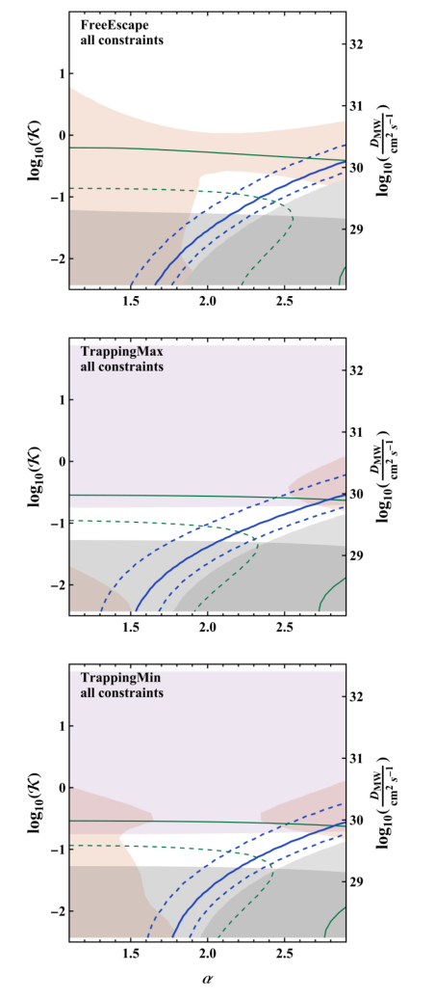
图注：三种外边界的累积观测约束，横轴为气体密度斜率，纵轴为无量纲扩散系数的对数。阴影及曲线沿用图 5 的定义，分别显示各项排除与可解释背景或晕辐射的条件。
怎么看这张图：横轴读 CGM 气体斜率、纵轴读扩散强度。在三个边界面板对照阴影和可解释背景的曲线，尤其查看自由逃逸的高扩散支。 三种边界在同一参数面上的观测排除交集。
来源与置信度：arXiv HTML；source verified；https://arxiv.org/html/2610.38061v1/constraintPlate_finalColumn.png
图 7
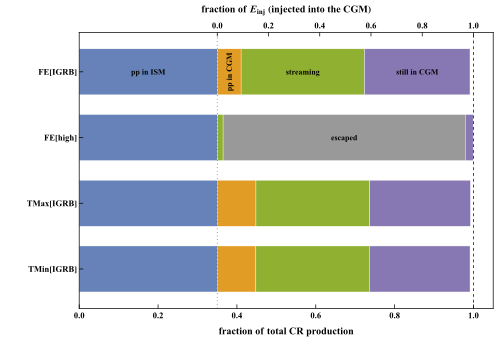
图注：现今质量为 10¹² 个太阳质量的晕在其成星史中产生的宇宙线能量去向。下轴以总产生量为分母，上轴以入晕量为分母。各段为逐项中位数，包括星际介质强子损失、星系周介质强子损失、流动损失、逃入星系际介质和剩余储能。逐项中位数的长度和可偏离 100%。
怎么看这张图：上下两轴的分母不同。先按下轴读盘内的强子损失，再按上轴比较入晕后留下、加热、碰撞及逃走的能量。 以相同质量和成星历史展示两类解的能量去向。
来源与置信度：arXiv HTML；source verified；https://arxiv.org/html/2610.38061v1/crFateBarRefined.svg
图 10
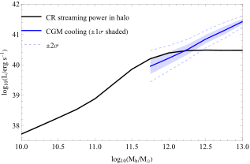
图注：近当代宇宙线流动给晕输送的热功率（黑线）与 eROSITA 堆叠的辐射损失估计（蓝线）。辐射除以能段份额 1/3，阴影和淡虚线分别为 ±1 和 ±2 个对数标准差。模型为自由逃逸，气体斜率 2.3、扩散参数约 0.15。冷却曲线始于观测下限约 10¹¹·⁷⁵ 个太阳质量。
怎么看这张图：沿当代晕质量横轴比较黑线加热和蓝线推定辐射，银河系质量附近两者接近；蓝线左端受观测样本的质量下限约束。 在可检查的质量范围内对比宇宙线加热和辐射冷却。
来源与置信度：arXiv HTML；source verified；https://arxiv.org/html/2610.38061v1/plotCRvsCoolV1.svg
强相关工作
Roth 等的盘模型把成星活动与盘的强子辐射相联系。这里将其能量依赖的逃逸折合成针对 1–10 GeV 校准的内边界，因此盘背景标定和晕输运参数承担不同角色。
Fermi-LAT 背景测量提供本文的观测上限和银河前景口径；Zhang 等的 eROSITA 堆叠给出质量依赖的软 X 射线信号。另有逆康普顿解释讨论高能电子对晕 X 射线的贡献。当前加热比较采用以热辐射为基准的修正，其物理解释依赖 X 射线成分。
同一事件 / 同类源线索：
相似工作：
基础理论 / 方法工作：
相反观点 / 张力线索：
（未提供）
2. Thinner Disks Struggle to Launch Jets: GRMHD Simulations of Magnetic Field Generation and Transport
- 来源：arXiv / astro-ph.HE
- 链接：https://arxiv.org/abs/2610.37758
- 作者：Jonatan Jacquemin-Ide, Mitchell C. Begelman, Henrik Latter, Jason Dexter, Alexander Tchekhovskoy
- 公告 / 来源日期：2026-10-30
- 阅读层级：重点精读
- 评分：novelty 8/10，importance 8/10，relevance 8/10，final 9.00/10
- 推荐理由：3D GRMHD比较相同初始纯环向场的盘厚、发电机、磁通输运和喷流效率，给出具体动态诊断及时间外推。
中文题目：从盘内发电机到视界磁通，薄盘为何更难产生强喷流
做了什么：起初只有环向磁场的吸积盘，能否自己生成足够的极向磁通并把它送到黑洞？作者用三组全局三维广义相对论磁流体模拟比较 $h/r\simeq0.3、0.2、0.1$ 的盘。三组均长出连贯的极向磁结构，但只有厚盘在模拟时段内累积到磁阻塞吸积（MAD），电磁喷流效率超过 100%。最薄盘的效率约为 1%。
诊断沿两条线展开。一条在盘内分解各空间尺度的磁场生成，找到薄盘里逐渐集中到中面上方的发电机活动。另一条追踪有符号磁通等值线并计算角动量应力，发现盘越薄，近黑洞磁场越弱，磁通向内传播也越慢。作者以拟合的外盘磁通库和输运速度估算延迟进入 MAD 的时标，这部分属于量级外推。
为什么重要：喷流需要穿过视界的相干磁通。外供垂直磁通充足时，薄盘的喷流可以很强。本文处理的是从环向场自行生成磁通、再把它送至中心的途径，并区分两步都会受盘厚影响。解释不同吸积状态的喷流时，盘内磁通历史与观测当下的盘厚应同时考虑。
理论 / 观测 / 仪器方法价值：极向磁能收支的方位傅里叶分解可以定位各尺度在哪个高度产生或耗散场；有符号磁通轨迹则把反转、向内输运和视界处的绝对磁通分开。两套诊断与垂直、径向角动量应力对照后，能定位喷流弱是磁通库小、输运慢，还是源端两者兼有。
为什么应该关注：用于 GRB 或黑洞双星喷流模型时，可把喷流启动时延、磁通极性反转和亮度变化与吸积几何并行比较，保留外供场和吸积状态的独立自由度。模拟诊断的是视界电磁能流，比较 LACT 伽马光变仍需粒子加速、辐射、视角和吸收。
展开详细解读：文章讲解、背景、理论、重点章节、图表与相关工作
文章详细讲解
初始磁场固定为环向。 三组最初无净极向磁通且 $\beta_{\rm ini}=5$，比较的问题是内禀 MRI 发电机。厚盘取自既有绝热计算，两种更薄的盘从另一类初态出发并由冷却维持目标厚度。内外边界、黑洞自旋等也有差异，因而结果主要是同类机制的几何趋势。
磁通的强度和极性分开计。 在给定半径对方位平均径向场积分，符号保留量能追踪穿越北半球的极性，绝对值积分用于衡量视界磁通积累。分开画能辨识一次翻转与磁场总量减弱之间的对应，避免符号相消掩盖场强。
湍流与轴对称项的作用随高度变化。 作者从平均感应方程分离速度磁场相关，再按方位模式 $m$ 分组。大尺度非轴对称结构可产生平均极向场，小尺度在诊断中偏耗散，中等尺度的符号随高度变；轴对称拉伸也能作正贡献。薄盘中显著的生成和输运上移到几倍热尺度高度。
把场运回去需要应力。 角动量通过盘内径向应力和穿越上下盘面的纬向应力传递。作者用该预算预测吸积速度，再沿磁通图上常值轨迹量磁通漂移。两种速度同量级、随盘变薄而降，结合径向磁通库存给出更长的估计集聚时间。
关键结果是怎么做出来的
厚盘约在 $2\times10^4r_g/c$ 进入 MAD，视界归一化磁通达到约 50。厚、中、薄三组后期视界电磁效率的量级分别约为 2、0.1 和 0.01。薄盘模拟延至约 $4\times10^4r_g/c$，在这段时间均未达 MAD；在 $2\times10^4r_g/c$ 附近，$h/r=0.2$ 和 0.1 的视界磁通约 5 和 0.03。
三组都至少发生一次视界极性反转，也都形成极向场。两组薄盘中，平均场在中面外形成相干结构，质量通量较强的层与较快的径向流入相联系。几何变薄并未阻止场的出现，但削弱了所建成的平均场。
方位分解表明较低 $m$ 的发电机与位于盘气氛的大尺度翻滚相关。图 10 在 $20r_g$ 显示大尺度项为正，小尺度项偏负，中等尺度项可在靠中面时为正而在气氛为负。轴对称项在较薄模型也很重要，作者将其形态联系到通道状拉伸。
径向和纬向应力对薄盘都重要，不能只用固定黏滞参数的径向薄盘关系推回测得的速度。图 13 表明，三组磁通内移与质量吸积速度在同一数量级，但中等厚度的磁通比吸积慢约 2–3 倍，最薄盘则可快约 2 倍。计算磁通速度时取平滑后的向内分支。
在 $20r_g$，三组给出极向磁压比约随厚度比的 4.5 次方变化，径向湍流应力参数约 2.5 次方，流入速度比约 3.5 次方。三个点支撑的是很陡的变化，局部收敛与初态差异都限制了精确指数的适用范围。
外盘还留有磁通。作者用相同方法对厚盘估得约 $4\times10^4r_g/c$，与实测相差约两倍，对 $h/r=0.2、0.1$ 分别估为 $7\times10^5$ 和 $10^8r_g/c$。最薄解的外推需要约 $10^3r_g$ 的场向内幸存，磁环重联或外供场都可改变结果。
展开背景、理论、公式、模型和章节导读
背景知识
两类场分量。 环向场绕着盘轴盘旋，极向场位于半径与极角张成的面。启动强黑洞喷流需要在视界保持相干的穿通磁通，局部磁场能量大仍可能因不同磁环抵消而难以积累。
MRI 输运角动量。 差动转动的盘可因磁旋不稳定而长出湍动；磁张力和速度关联令气体向外转移角动量、向内吸积。速度与磁场起伏的平均相关还可以重建大尺度场。
磁阻塞吸积。 视界附近磁压升高到能显著干扰流入时进入 MAD。归一化临界磁通会随几何和惯用定义变化；较薄盘与较厚盘的临界值不能直接设成同一常数。
电磁效率的分母。 黑洞旋转能可由电磁场抽取，分母是流入静质量的能量通量。因此 $\eta_{\rm EM}>1$ 表示输出电磁功率超过该分母，黑洞自旋提供额外能量。
基础理论 / 方法脉络
将场做方位平均后，轴对称速度与场可以平流、拉伸已有磁场。非轴对称波动的交叉相关产生平均电动势，允许起初纯环向的场重新组织成平均极向结构。
按方位角模式分解相关项可以区分尺度。给定盘面半径时，较小 $m$ 对应较长弧向尺度，比较不同盘厚必须使用本地尺度高度，不能把同一个 $m$ 直接认作同一个无量纲尺度。
吸积率由角动量输运决定。盘内部径向应力沿径向交换角动量，表面纬向应力可通过磁结构将角动量传给气氛。薄盘表面项比体积项少一个 $h/r$ 几何因子，可在低厚度时相对重要。
相干磁通的输运可沿 $\Phi(r,t)$ 的等值轨迹读，既受气体平均流入影响，也受生成、重联和磁扩散影响。该轨迹的速度和质量流入同量级，为采用速度模型作时标估计提供依据。
公式与推导
尺度与初态。 下式给阅读用定义。$r_g$ 是引力长度，模拟时间单位 $r_g/c$，$h$ 为盘热尺度高度，$p_{\rm gas}$ 和 $p_{\rm mag}$ 分别为初始气体、磁压力。
平均感应与湍流电动势。 下式为原文平均感应结构的教学矢量写法，省略实际坐标的度规项。横杠是方位平均，$\delta$ 为相对平均的扰动；$\boldsymbol{\mathcal E}$ 为非轴对称相关的平均电动势。
北半球的极性及强度。 原文式 10–13、51。$B^r$ 是径向场，$\theta$ 为极角，$g$ 为度规行列式，尖括号为方位平均，$\dot m_5$ 为 $5r_g$ 处北半球吸积率；式采用作者的代码单位。
由视界能量流定义喷流效率。 原文式 14，$P_{\rm EM,H}$ 是以外流为正的视界电磁功率；$\phi_{\rm BH}$ 在视界半径 $r_{\rm H}$ 取值。
比较体积与表面应力。 原文式 49 的外盘近似，$V_k$ 是开普勒速度，$P_0$ 为中面压力，$\mathcal T_r$、$\mathcal T_\theta$ 是径向与纬向角动量应力。代入 $z=\pm h$ 的差时要保留两盘面的符号。
沿磁通图的等值线求速度。 对光滑的常 $\Phi$ 轨迹用链式法则得原文式 52；在 $\partial_r\Phi$ 很小或磁场反转附近不宜直接用数值导数。原文平滑后取向内分支并与可追踪路径核对。
把三个厚度的测量对齐。 原文式 55–57，$\beta_p^{-1}$ 为平均极向场的磁压比，$\alpha_\nu=\mathcal T_r^{\rm tu}/P_0$ 量径向湍流应力；是 $20r_g$ 附近三模拟的拟合尺度关系。
需要多远的磁通库。 原文式 61–62，$a_\phi$ 和 $\xi$ 是拟合归一化和指数，$\phi_0$ 为视界的时均基准；若远处幂律项主导，达到临界磁通 $\phi_{\rm MAD}$ 所需半径为以下量级。
速度积分解释长时标。 原文式 63–64；取 $x=r/r_g$ 和 $|v_\Phi|/c=\hat v x^{-1/2}$，$\hat v$ 无量纲。忽略内端和 $2/3$ 常系数得到作者的量级式，既受速度也受磁库半径影响。
模型拟合 / 应用方法
数值试验使用 H-AMR 全局三维 GRMHD，三组均由相同磁化比的环向初场开始。厚盘为既有绝热试验，薄盘的冷却维持热尺度高度。因此共同比较的是由盘内自行造场的路径，细小定量差异含有初态与冷却的影响。
诊断先用视界通量、质量吸积率和喷流效率比较时间发展，再选择各组的相应平均窗口。厚盘进入 MAD 较早，径向磁库的比较使用其早期阶段，图 1 的部分淡色段也由保存的降维量重建。
在盘内，先作方位平均和模式分解，再沿半径与高度测极向磁能的生成、耗散与轴对称项。标准 MRI 品质因子总体合格，最薄盘局部的更严平均场判据可能接近分辨边缘，因此作者保留高分辨率时平均场加强的可能性。
在磁通运输诊断中，将有符号磁通平滑后沿时间和半径求梯度，只平均向内的值，再用等值图的实际轨迹核验。用应力式预测气体速度，约在 $10r_g$ 以外较相符，靠视界处不应继续沿用该近似。
最后把外半径磁通拟合成幂律，把传输速度近似成开普勒型下降，并对厚度采用不同 MAD 临界通量。作者用厚盘已发生的 MAD 和薄盘已达磁通校验量级。继续生成的场、磁环破坏和磁化反过来改变流速均可能改写薄盘的长时间演化。
重点章节 / 结果段落怎么读
- §2 读三组初始状态、冷却和分辨率，并查看表 1 的平均时段。
- §3 和图 1 分开读归一化磁通、符号反转和电磁效率。
- §4.2 和图 9–10 查看大、中、小尺度磁能收支随高度的变化。
- §5 和图 13–14 对照应力预算、磁通内移速度及磁通轨迹。
- §6.2 和 §7.2 阅读延迟 MAD 外推、外盘磁环存活条件与分辨率限制。
关键图表与解读
图 1
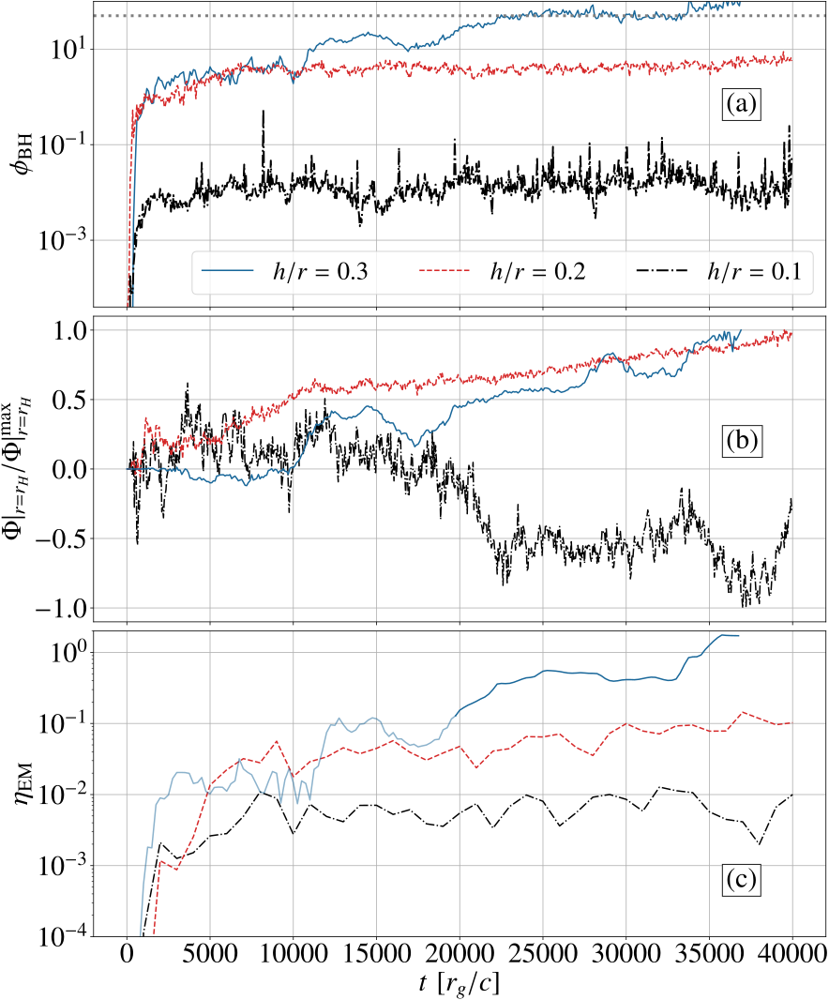
图注：三种盘厚下黑洞磁通和喷流的时间演化。上为视界归一化磁通，中为按各组最大绝对值归一的有符号磁通，下为视界电磁效率。厚盘的淡色段由保存的降维量重建。三组均有极性反转，只有最厚盘在模拟内进入 MAD。
怎么看这张图：依次从上到下辨认绝对归一化磁通、带符号极性和电磁效率。薄盘曲线也反转，模拟窗口内只有厚盘进入 MAD。 三项视界诊断共同展示厚度对喷流的影响。
来源与置信度：arXiv HTML；source verified；https://arxiv.org/html/2610.37758v1/Fig1_clean.svg
图 10
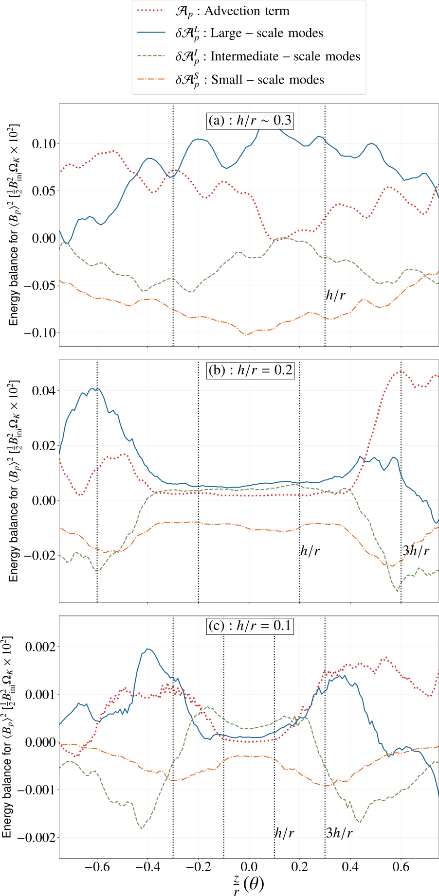
图注：在 20 个引力半径处，三种盘厚的大、中、小尺度极向场生成项及轴对称项的时间平均垂直分布。大尺度模式产生极向场，小尺度耗散极向场，中等尺度在中面附近生成并在气氛耗散。薄盘的生成和输运逐渐集中在中面上下约 2–4 个尺度高度处。
怎么看这张图：在三幅盘厚面板中看正负与峰值高度的变化。大尺度正贡献随盘变薄更集中在距中面约两至四个热尺度高度的位置。 分辨不同尺度的极向场生成、耗散与所在高度。
来源与置信度：arXiv HTML；source verified；https://arxiv.org/html/2610.37758v1/mode_prof.svg
图 13
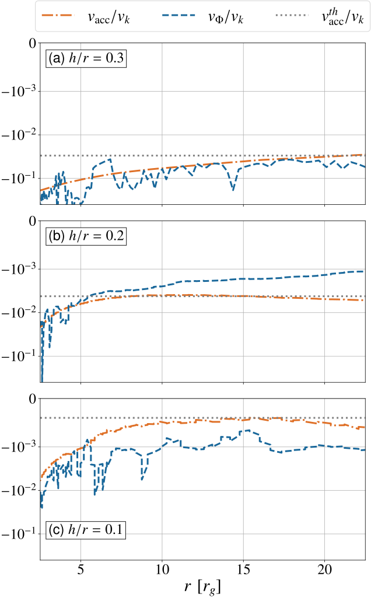
图注：三种盘厚下时间平均的吸积速度与磁通输运速度的径向分布，均用当地开普勒速度归一。水平点线为角动量输运模型的预言，约 10 个引力半径外与测得的吸积速度接近。两个速度的量级随盘变薄而降低。
怎么看这张图：比较各面板中气体吸积和磁通内移相对开普勒速度的量级，再在半径约十个引力尺度外检查应力近似与测量是否一致。 联系磁通内移和吸积应力的实测诊断。
来源与置信度：arXiv HTML；source verified；https://arxiv.org/html/2610.37758v1/accretion_vel.svg
图 15
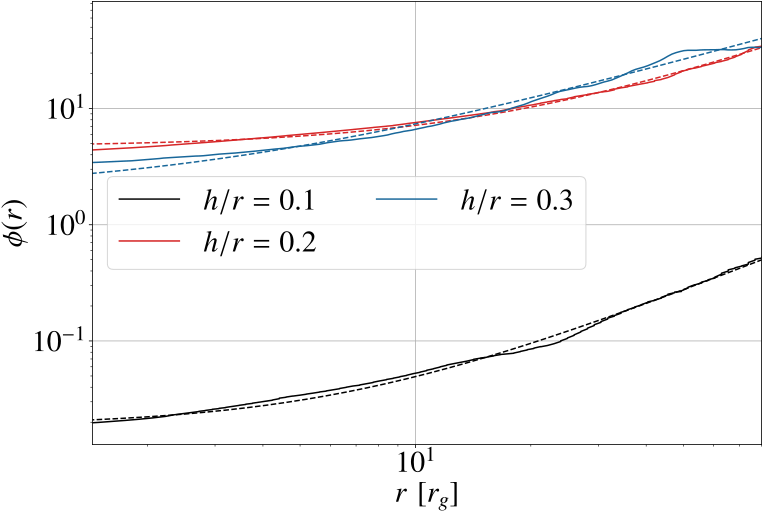
图注：三种盘厚下时均无量纲磁通的径向分布，虚线是幂律拟合。远处的磁通多于当时已到达黑洞的量，盘变薄时拟合归一化明显下降。最厚盘更早进入 MAD，其平均时间窗处于相对早的演化阶段。
怎么看这张图：比较中心与外盘的通量差、各厚度虚线归一化，图示范围内库存增加。能否到视界仍取决于磁环长距离传播时是否保留相干性。 显示估算 MAD 时标所用的径向磁通库。
来源与置信度：arXiv HTML；source verified；https://arxiv.org/html/2610.37758v1/pow_law.svg
强相关工作
Liska、Tchekhovskoy 与 Quataert在纯环向初场的厚盘模拟中展示自生极向场和强喷流。Jacquemin-Ide 等进一步诊断厚盘 MRI 发电机。本文沿用这条起点，通过薄盘模拟检查同一类机制在不同几何和高度的表现。
Tchekhovskoy、Narayan 与 McKinney刻画快速转动黑洞 MAD 的高效率喷流，Avara 等研究薄 MAD 的效率。本文关注薄盘由纯环向场自行抵达 MAD 的过程，已处于强净磁通状态的薄盘给它的临界值和输出提供比较。
同一事件 / 同类源线索：
相似工作：
基础理论 / 方法工作：
相反观点 / 张力线索：
（未提供）
相关简报
1. VERITAS Limits on Dark Matter Annihilation in the Galactic Center Halo
- 来源：arXiv / astro-ph.HE
- 链接：https://arxiv.org/abs/2610.39865
- 作者：A. Archer, P. Bangale, J. T. Bartkoske, W. Benbow, N. R. Bond, J. H. Buckley, Y. Chen, J. L. Christiansen
- 公告 / 来源日期：2026-10-30
- 阅读层级：相关简报
- 评分：novelty 7/10，importance 8/10，relevance 10/10，final 9.40/10
- 推荐理由：VERITAS大天顶银心晕和模板本底提供暗物质截面新上限，对IACT延展源直接参考，非信号发现。
中文题目：VERITAS 用独立背景模板约束银河中心暗物质湮灭
问题、方法与结论：银河中心可能有很大的暗物质湮灭柱密度，视场却同时包含明亮点源、银河面扩展辐射和宇宙线误分类。VERITAS 把 2010–2022 年取得的 177.8 小时 Sgr A* 数据与 50.8 小时附近对照天区配合。在对照天区按相机位置、重建能量和仪器时期建立背景形状，利用宇宙线样事例校准各次观测的尺度，再在半径 2° 的目标区掩蔽已知信号区，做分空间、分能量的暗物质模板检验。
意义与贡献：搜索区内单个分析格在试验修正前也没有超过 3σ 的背景偏差。假定 Einasto 暗物质晕并全部湮灭到 τ⁺τ⁻，最强的 95% 置信上限在暗物质质量 6 TeV，速度加权截面小于 1.77×10⁻²⁵ cm³/s。灰带是该分析的 1σ 系统误差；τ、W 玻色子和底夸克末态应各读自己的曲线。
可借鉴之处：同一视场内取反射背景时，可能把延伸的待测模板一起减掉。对照场的背景形状和目标场的宇宙线率提供另一个切入点，便于大天顶角的银河中心搜索。约束的强度仍随仪器响应、对照场可迁移性、银河中心密度平方的视线积分及信号区遮罩改变。
局限与关注点：对 LACT 的扩展源分析，可借鉴按能量、相机坐标与仪器状态建立独立背景模板，并用对照观测检查残差。有效面积和阈值也要用相应的大天顶角响应重算；限值需随本阵列曝光和选区重新推断。
图 6
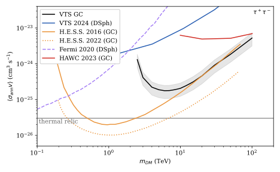
图注：假定暗物质完全湮灭到 τ⁺τ⁻，黑线为速度加权截面的 95% 置信上限，灰带为 1σ 系统不确定性。比较线来自 VERITAS 矮星系、H.E.S.S.、Fermi-LAT 和 HAWC 的分析；上限采用 Einasto 剖面。
怎么看这张图：沿质量横轴读黑线最低点；灰带给本研究的系统不确定性，各实验曲线应连同晕剖面、观测区域和通道假设一起比较。 给出该搜索最强的暗物质湮灭通道上限。
来源与置信度：arXiv HTML；source verified；https://arxiv.org/html/2610.39865v1/tau.svg
2. From photons to neutrinos : Advancing multi-messenger modeling with Gammapy
- 来源：arXiv / astro-ph.HE
- 链接：https://arxiv.org/abs/2610.40242
- 作者：Justin Albinet, Lea Heckmann, Matteo Cerruti, Bruno Khélifi
- 公告 / 来源日期：2026-10-30
- 阅读层级：相关简报
- 评分：novelty 7/10，importance 8/10，relevance 10/10，final 9.40/10
- 推荐理由：Gammapy折叠仪器响应直接联合计数有关键方法价值；当前演示须区别真实联合中微子数据与预测。
中文题目：用模拟耀变体比较多仪器计数拟合与通量点拟合
问题、方法与结论：作者在 Gammapy 接入 JetSeT 的同步自康普顿模型，以接近 Mrk 501 的参数生成合成数据。输入包含 Swift UVOT 和 XRT、Fermi-LAT 的实际响应及 CTAO 北站的模拟响应，也考虑尘埃红化、软 X 射线吸收和河外背景光吸收。他们生成 100 对计数及通量点数据集，在相同起始条件下比较拟合，并分别检查合理初值和随机初值；用 UltraNest 的均匀先验后验对照 iminuit 协方差。
意义与贡献：这批试验的最佳拟合参数相近，计数空间的协方差轮廓与嵌套采样后验也较接近。通量点的局部协方差在展示的例子里明显偏窄。综合收敛、误差可靠性和恢复注入值的距离后，计数空间通过判据的次数更多。作者的三参数试验中两种常规拟合约需 10 和 5 分钟，嵌套采样均超过 3 小时。
可借鉴之处：把模型正向折叠到各仪器计数，可保留分辨率、曝光和低计数噪声对约束的影响。现阶段比较只有一个合成源型和指定响应、噪声与拟合配置，真实源的参数偏差、跨仪器标定误差及中微子联拟仍需实测检查。
局限与关注点：若要把 LACT 谱与其他波段联合，可在可获得响应与计数的波段先测注入恢复，检查通量点协方差是否低估误差。应区分更常收敛和能够覆盖真值，两者需不同的测试。
图 3
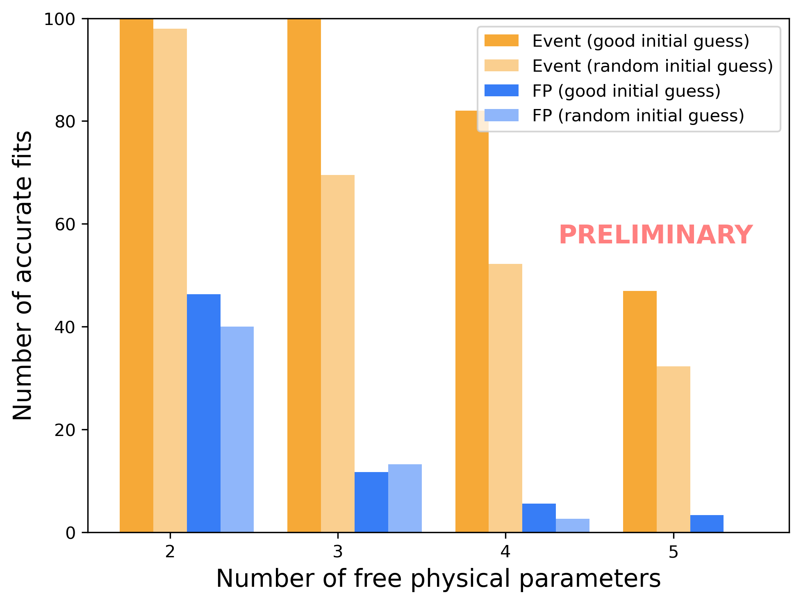
图注：按自由物理参数数目和两种初值比较的初步模拟结果。橙色为计数拟合，蓝色为通量点拟合；深色从合理初值出发，浅色从随机初值出发。柱高是收敛、误差可靠且符合作者 5σ 距离判据的拟合数。
怎么看这张图：横轴增加自由参数时，比较两种初值下橙、蓝柱的下降。该计数指符合收敛、误差可靠且马氏距离小于 5 的模拟实现，图标为初步结果。 用百组合成数据的统计结果展示两种拟合输入的差异。
来源与置信度：arXiv HTML；source verified；https://arxiv.org/html/2610.40242v1/Figures/histogram.png
3. Harmonic brightness oscillations point to magnetar giant flares in rare short gamma-ray bursts
- 来源：arXiv / astro-ph.HE
- 链接：https://arxiv.org/abs/2610.39130
- 作者：Chen, Run-Chao, Gottlieb, Ore, Zhang, Bin-Bin, Levin, Yuri, Lai, Dong, Yang, Jun, Yin, Yi-Han Iris, Wang, Suo-Ning
- 公告 / 来源日期：2026-10-30
- 阅读层级：相关简报
- 评分：novelty 7/10，importance 7/10，relevance 10/10，final 9.05/10
- 推荐理由：Science Advances同DOI作者版；两已报kHz短暴的谐波组织提供磁星诊断线索，样本与试验因子限制只作简报。
中文题目：短伽马暴的约360 Hz类谐波结构：磁星巨耀发解释的线索与统计边界
问题、方法与结论：科学问题是罕见短伽马暴中的千赫兹亮度变化究竟来自并合遗迹，还是磁星巨耀发。作者重分析BATSE记录的GRB 910711，并与已关联NGC 253的GRB 200415A比较，采用BAT/ASIM事件数据避开GBM饱和问题。两者都有约10毫秒尖峰和较弱尾部；周期图、小波图显示若干接近360 Hz整数倍的功率过量，单段双谱模长也在相关频率组合处增强。作者据此提出类谐波组织及磁星替代解释，尚非独立发现稳定360 Hz振荡。期刊日期为10月28日；本次读的是明确关联该DOI的10月29日arXiv作者版v1，含补充材料。
意义与贡献：新价值是把硬能谱、极快时变及已有千赫兹结构放在同一来源鉴别问题中。910711的黑体温度约216 keV，截止幂律低能指数约0.87，但两模型BIC仅相差3.34，不能据此唯一确定热辐射。短暴分类若只依赖持续时间或某个QPO频率，可能混入邻近磁星巨耀发。
可借鉴之处：可借鉴的是让模拟重复相同时间窗、过采样和频率搜索：对10毫秒窗，真实傅里叶分辨尺度约100 Hz，10 Hz网格并未增加独立信息。包络零假设下低频过量的p值为0.051和0.001；包含千赫兹成分后变为0.155和0.334，说明结论对背景模型敏感。包络模拟中联合谐波统计给约0.00013和0.00045，但只覆盖260–460 Hz搜索及已选节点，不是完整选题流程的全局发现概率。
局限与关注点：局限与下一步：作者只取一段双谱的模长，未获得可靠相位或相干性；按其式(8)，该模长就是三个傅里叶幅度的乘积，本身不足以证明非线性相位耦合，这是核读者的代数判断。节点由同一数据的小波图选择，且模拟只取后验最高20%，仍应检查选择偏差、不同零假设及全后验覆盖。910711定位约6度，55 Mpc是经验能量关系给的允许尺度，17个候选星系都不是已确认宿主；8.75 Mpc只是光变缩放示意。更精确定位、独立事件与保留相位信息的检验才可能区分来源，不能据本研究宣称发现夸克物质界面振荡。
图2
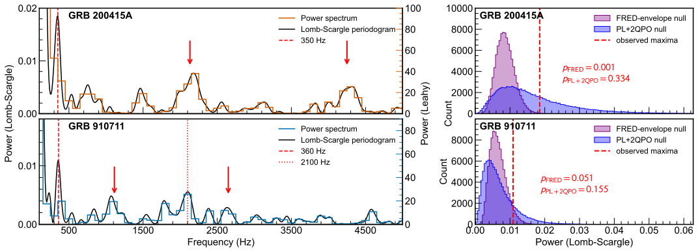
图注：图2｜GRB 910711和GRB 200415A中与已报告千赫兹亮度振荡相伴的低频过量。左：用[96,106]毫秒内、2微秒分箱的光变计算Leahy归一化功率谱与Lomb–Scargle周期图（见图1C），上为GRB 200415A，下为GRB 910711。展示100–5000 Hz，Lomb–Scargle周期图采用间隔10 Hz的过采样网格。两暴分别在约350和360 Hz处出现明显低频过量（红虚线）。红箭头标出前作报告的千赫兹亮度振荡；910711另在约2100 Hz处出现过量，接近200415A中已报告的约2132 Hz振荡。右：低频过量的蒙特卡洛评估。直方图为两种假设各生成10万条模拟光变后，在相同260–460 Hz搜索区间内得到的最大Lomb–Scargle功率的零假设分布；紫色为仅包含脉冲包络变化的FRED包络模型，蓝色为功率谱中加入已报告千赫兹振荡过量的PL+2QPO模型。红虚线为实测最大功率。在FRED包络假设下，200415A和910711对应概率分别约0.001和0.051；加入千赫兹过量后分别升至0.334和0.155，表明已有高频结构会使低频过量不那么出乎预期。
怎么看这张图：优先比较右侧紫蓝两种分布与红虚线的相对位置。低频峰看起来相似，并不意味着在两种零假设下同样显著。10 Hz为网格间距而非独立分辨率；图注和正文对搜索区间存在小口径差异。 直接展示核心结果的零假设依赖。
来源与置信度：arXiv HTML；source verified；https://arxiv.org/html/2610.39130v1/Figure_2.svg
图3
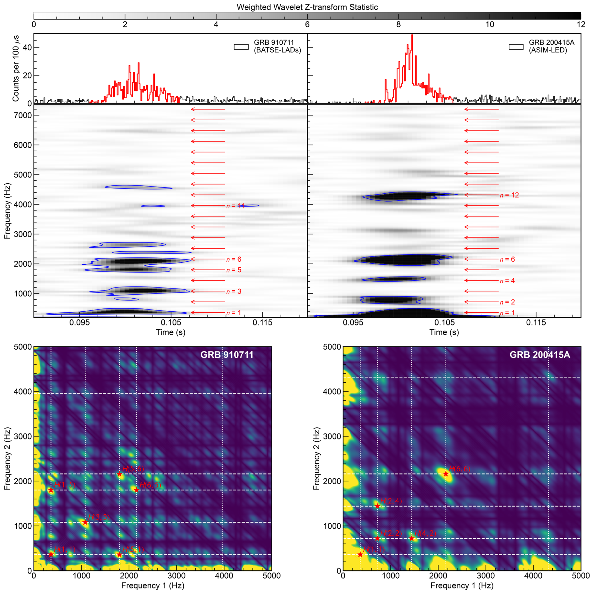
图注：图3｜GRB 910711与GRB 200415A中共同360 Hz振荡特征的谐波分析。上部：顶部为未经能量筛选、0.1毫秒分箱的光变，下方为2微秒分箱数据的时频图；蓝色等高线标出检验统计量最高95%的区域（按原图注表述，非全局95%置信线）。候选谐波在初始尖峰中同时出现在频率nf附近，f=360 Hz；910711对应n=1、3、5、6、11，200415A对应n=1、2、4、6、12。下部：两暴[96,106]毫秒初始尖峰的双谱，该区间在顶部以红色阴影标出，时间分箱50微秒。补零使采样频率网格细化到10 Hz，并用Hamming窗减小红噪声泄漏。较亮区域表示较大的双谱模长，原文将其解释为较强的非线性耦合。符号H(x,y)与H(y,x)等价，表示频率对(xf,yf)处的谐波特征；原文解释这类耦合会在xf、yf及其和(x+y)f处产生傅里叶功率。与时频图谐波峰紧密对应的频率对用红星标出，作者据此提出两事件具有一致谐波系统。
怎么看这张图：把上部时频节点与下部红星逐一对应，但不要把亮度当成相位锁定证据。正文只用单段双谱模长，未进行独立段平均；其模长可因三个频率各自功率增强而变大。原图对耦合的解释是作者主张，简报保留核读限制。 展示类谐波主张本身，使读者可与限制对照。
来源与置信度：arXiv HTML；source verified；https://arxiv.org/html/2610.39130v1/Figure_3.png
4. Validating an X-ray-based method for identifying Fermi blazars
- 来源：arXiv / astro-ph.HE
- 链接：https://arxiv.org/abs/2610.37902
- 作者：J. L. Weiss, E. J. Marchesini, I. Andruchow, N. Masetti
- 公告 / 来源日期：2026-10-30
- 阅读层级：相关简报
- 评分：novelty 7/10，importance 7/10，relevance 9/10，final 8.70/10
- 推荐理由：对71个有位置相符光谱的X射线优选对象重分类，量化BL Lac候选纯度及光谱样本偏差。
中文题目：用 Swift X 射线位置复核 Fermi 未关联源的耀变体候选
问题、方法与结论：研究从 3FGL 中挑出 148 个 Fermi 未识别源，要求其 95% 误差椭圆内至少有一个 Swift-XRT 检测，并限制银河纬度、曝光和信噪比。随后从文献、SDSS DR19 与 LAMOST DR9 找光学光谱。77 个 Fermi 场有文献光谱候选，进一步要求光学位置与 X 射线对应后留下 71 个，红外与射电性质用于交叉核对和讨论个别疑似源。
意义与贡献：位置及光谱筛选后的 71 个中有 57 个 BL Lac，占 80.28%；按论文所分的常见伽马活动星系核类别共 62 个，占 87.32%。这两个比例的分母均为可光谱验证的匹配子样本。作者以匹配筛选的 2SXPS 面密度估算约有 4±2 个偶合，四个 Seyfert 光谱分类也仍需进一步排除随机对应或其他伽马源。
可借鉴之处：主要贡献是核验 X 射线定位作为光谱跟进前的预筛，避免把低分辨率伽马视场内所有光谱目标都当作同一来源。样本依赖 X 射线检出和已有光谱，会偏向较亮的对象和强 X 射线 BL Lac，适合评价这一选择下的后续效率。
局限与关注点：跟进 Fermi 或扩展 TeV 天区时，可先做位置联合和光谱质量筛选，再用本地源密度估计偶合率。遇到多个可疑对应体时，优先结合射电谱、时变或更精细定位复核。
图 3
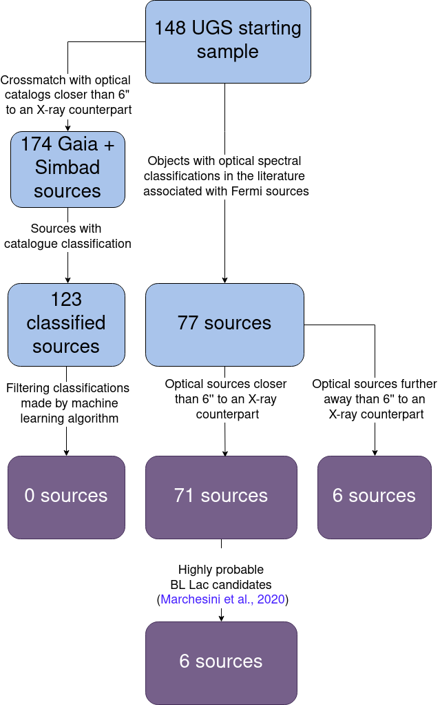
图注：本文分析样本的筛选流程，展示从 Swift-XRT 候选出发，经光学光谱查找、光谱质量检查及对应体位置匹配后形成的各类样本。
怎么看这张图：先读初始 X 射线筛选，再区分有光谱报道和 X 射线位置相符两级门槛。后者才是论文计算 BL Lac 比例的 71 个对象。 追踪分母及光学复核样本的形成。
来源与置信度：arXiv HTML；source verified；https://arxiv.org/html/2610.37902v1/flow_chart.png
5. XRISM/Resolve Study of Large Scale Properties in Tycho's Supernova Remnant
- 来源：arXiv / astro-ph.HE
- 链接：https://arxiv.org/abs/2610.39200
- 作者：Tyler E. Hanover, Mark D. Leising
- 公告 / 来源日期：2026-10-30
- 阅读层级：相关简报
- 评分：novelty 7/10，importance 8/10，relevance 8/10，final 8.70/10
- 推荐理由：五个XRISM微量热谱分区联拟给Tycho大尺度膨胀、元素丰度及铁前后不对称的新约束。
中文题目：用 XRISM 分解第谷超新星遗迹的双峰谱线
问题、方法与结论：研究把 XRISM Resolve 的五个观测拆出 13 条从中心到边缘的能谱。作者沿四个方向分别联拟，各方向均包含同一中心谱。模型用非平衡激波等离子体描述铁族和中等质量元素，每组又分接近与远离的多普勒成分。拟合在同一方向的多条谱之间关联丰度，并在元素组内关联红移；幂律与仪器背景分别建模。
意义与贡献：从中心看过去，多个元素可出现分开的蓝移、红移峰；沿各方向到外缘后双峰趋于合拢，符合膨胀壳的视线投影。铁族的接近成分较远离成分慢。中心到外缘拟合和整幅数据的联合检查给出相近但有差别的质量比；部分外围谱可压低某些分量，且少数参数有多峰后验。
可借鉴之处：分开处理速度分量能降低把几何展宽误当热展宽的风险，帮助用观测线形检验 Ia 型遗迹的三维动力学。统一丰度是模型约束；量到的是已被激波加热且发出 X 射线的材料，转换成总产额还涉及未受激波部分。四个方向共享中心谱，不能当四份完全独立证据。
局限与关注点：建模遗迹多波段发射时，可将投影速度、元素丰度和电离状态分开。高分辨率谱给热喷出物的空间线索；TeV 模板仍需独立的粒子加速、靶气体或光子场证据。
图 4
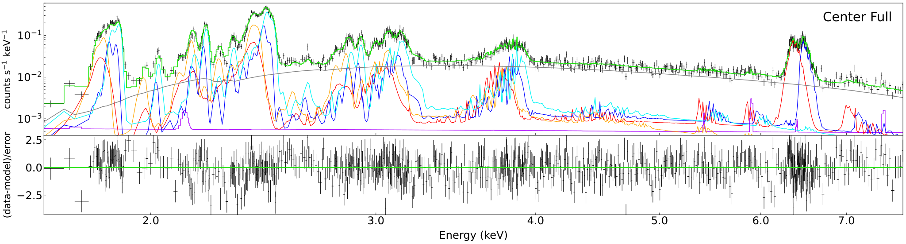
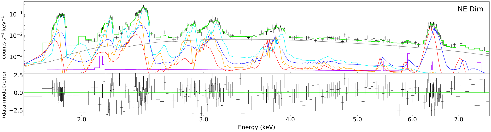
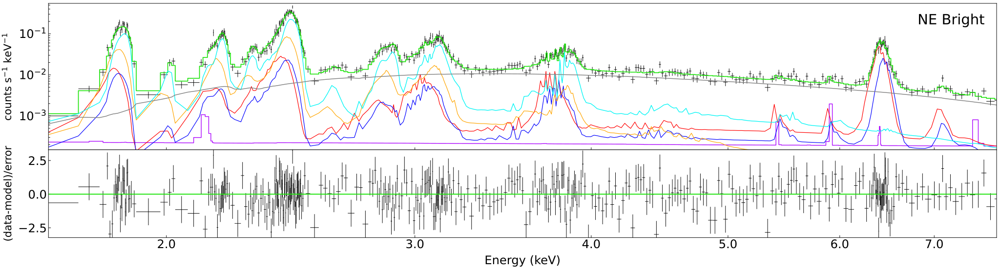
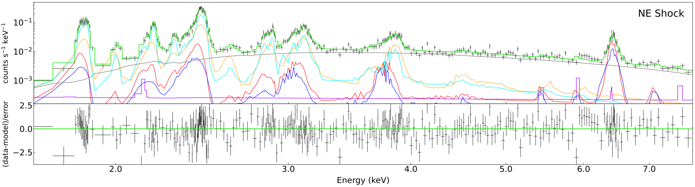
图注：东北方向同时拟合的各条光谱及残差。红和蓝是铁族元素为主的红移、蓝移非平衡激波成分，橙和青是中等质量元素为主的红移、蓝移成分，灰线为幂律，紫线为非 X 射线仪器背景。
怎么看这张图：沿东北方向从中心到外缘看谱线双峰逐渐靠近，并对照铁族、 中质量元素各自的红蓝成分与残差。颜色为模型分量。 检查多成分拟合怎样解释空间变化的谱线。
来源与置信度：arXiv HTML；source verified；https://arxiv.org/html/2610.39200v1/NE_center_spectrum.svg；https://arxiv.org/html/2610.39200v1/NE_dim_spectrum.svg；https://arxiv.org/html/2610.39200v1/NE_bright_spectrum.svg；https://arxiv.org/html/2610.39200v1/NE_shock_spectrum.svg
6. The MARTINI platform II. Tracing r-process nucleosynthesis in neutron star mergers with long-lived remnants
- 来源：arXiv / astro-ph.HE
- 链接：https://arxiv.org/abs/2610.37893
- 作者：Eleonora Loffredo, Diego Vescovi, Albino Perego, Federico Maria Guercilena, Sergio Cristallo
- 公告 / 来源日期：2026-10-30
- 阅读层级：相关简报
- 评分：novelty 8/10，importance 8/10，relevance 7/10，final 8.65/10
- 推荐理由：8组含M1中微子输运的长期并合残余示踪及WinNet产额公开，能核电子分数和重核产额差。
中文题目：MARTINI 发布长寿命双中子星并合的核合成产额与轨迹
问题、方法与结论：作者整理八个全广义相对论双中子星并合模拟，覆盖不同质量比、总质量和物态方程。各组都留下长寿命中子星，并用 M1 近似输运中微子。作者把穿越探测球面的动力抛出物和盘风性质分开，通过每组约 3000–5000 个示踪粒子赋权重，再用 WinNet 得到并合后一天和十亿年的元素产额，与轨迹一起发布。
意义与贡献：一天时较轻与第一峰元素相对稳健，中微子照射的盘风加强轻元素；重 r 过程产额可相差超过一个数量级，较不等质量的系统一般抛出更多富中子物质。十亿年时锶依然较稳，钡、铕和钍的量仍有较大散布。直接风模型里，一天时多数组的盘风氦质量分数约为 0.2–0.3。
可借鉴之处：把热力学历史和产额一起开放，便于在同一输入上替换核反应网络或盘风处方。模拟终止时风质量未饱和，额外加入吸积盘质量的 20% 或 40% 是处方。核质量模型、反应率、分辨率与后处理外推均能改变产额，样本也没有迅速坍缩成黑洞的系统。
局限与关注点：在千新星光谱或银河化学演化中，可先分开应用风和动力抛出物，再对盘风总量和双星质量比做敏感性分析。氦质量分数高仍需辐射转移和激发条件才能关联可见谱线。
图 6
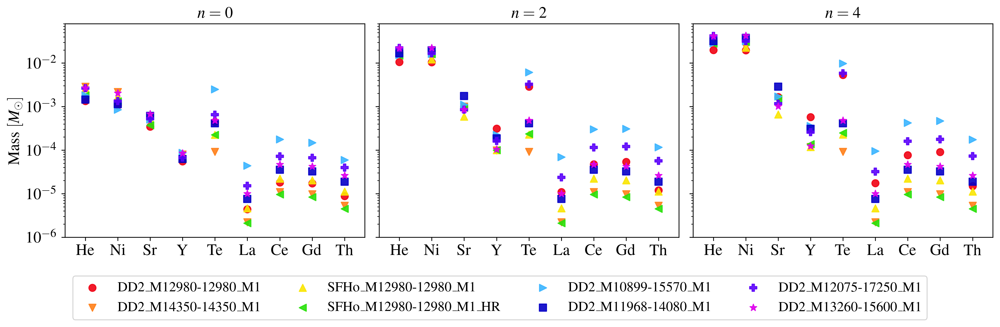
图注：并合后一天、各双中子星模拟合成的选定元素质量。从左到右，盘风质量取模拟窗口内直接测得的抛出质量，再分别取额外加入 20% 或 40% 吸积盘质量的两种外推处方。
怎么看这张图：同一模型横跨三栏，盘风质量处方逐渐增加。比较轻元素的稳定性和重元素散布时，应先核对所用风质量假设。 直接对比不同并合模型和盘风处方的元素产额。
来源与置信度：arXiv HTML；source verified；https://arxiv.org/html/2610.37893v1/figures/elements_1d_reduced.png
7. Search for Eccentric Neutron Star-Black Hole Binaries in Advanced LIGO's Fourth Observing Run using Effective-One-Body Waveforms
- 来源：arXiv / astro-ph.HE
- 链接：https://arxiv.org/abs/2610.37997
- 作者：Aleyna Akyüz, Keisi Kacanja, Rahul Dhurkunde, Alexander H. Nitz
- 公告 / 来源日期：2026-10-30
- 阅读层级：相关简报
- 评分：novelty 8/10，importance 8/10，relevance 7/10，final 8.65/10
- 推荐理由：O4真实数据的时域偏心EOB模板高效实现，88.6M模板并给出更新的条件并合率上限。
中文题目：在 LIGO O4 数据里搜索偏心中子星—黑洞并合
问题、方法与结论：团队将含近拱点进动及轨道谐波的时域有效单体波形用于大范围匹配滤波。低频按多频带处理，高频用相近模板的比值滤波。生产集群试验的吞吐提升约 20 倍，使 8860 万模板能覆盖 O4a、O4b 的 401 天数据，其中双站同时观测 238 天，另有 163 天单站时间。作者通过注入试验校准灵敏度，模板偏心率用 20 Hz 作参考。
意义与贡献：搜索恢复了两次已知的低质量并合，最佳模板与近圆轨道一致，未找到新的显著偏心事件。给定质量与模板覆盖范围，偏心 NSBH 本地并合率的 90% 可信上限为 7.5–57 Gpc⁻³ yr⁻¹。与简化偏心模型相比，所测高偏心区间的灵敏体积提高约 25%–30%；这一收益与 O4 仪器提升共同影响事件率上限。
可借鉴之处：高偏心波形的谐波会使圆模板失配，并合率上限因此依赖显式注入所得的选择函数。研究也给出两个关于 O3 的 GW200105 的条件结果：视为非偏心时，同参数 O4 上限是 12.1；视为已发现的偏心例子时，合并 O3 与 O4 后的上限为 15.3，单位相同。
局限与关注点：若要研究引力波电磁对应体，事件率可用作带条件的人口先验。应用前先检查质量比、偏心覆盖范围和单站与双站检测口径，尤其留意高于模板边界时灵敏度迅速下降。
图 4
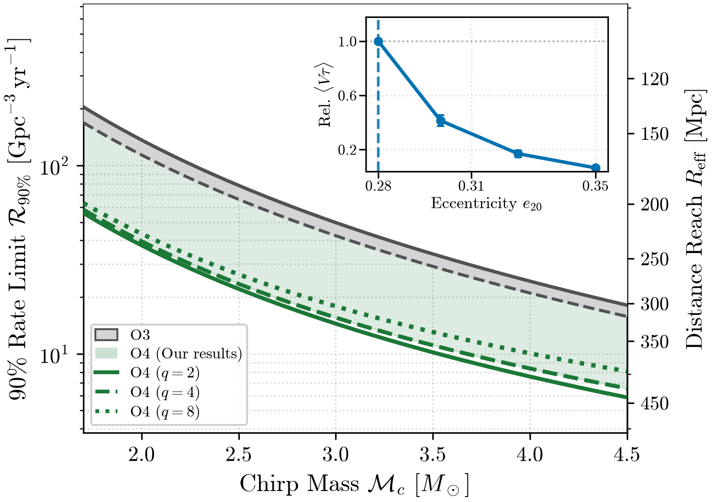
图注：O4a 和 O4b 中本地并合率密度 90% 可信上限（左轴）与有效探测距离（右轴）随啁啾质量变化。绿色为质量比 2、4、8 的 O4 结果，灰色为经波形体积恢复校正的 O3 比较。插图把偏心率超出模板边界后的灵敏体积时间按 e₂₀=0.28 归一。
怎么看这张图：沿啁啾质量看三条绿线的并合率上限，并看插图在偏心率超过模板边缘后灵敏体积时间下降，避免把上限外推到极高偏心。 同时显示真实搜寻约束与模板边界外的灵敏度损失。
来源与置信度：arXiv HTML；source verified；https://arxiv.org/html/2610.37997v1/fig4_rate_limits.png
8. Black Hole Spin Evolution in Magnetized Accretion Flows
- 来源：arXiv / astro-ph.HE
- 链接：https://arxiv.org/abs/2610.38673
- 作者：Danat Issa, Ore Gottlieb, Jonatan Jacquemin-Ide, Matthew Liska
- 公告 / 来源日期：2026-10-30
- 阅读层级：相关简报
- 评分：novelty 8/10，importance 8/10，relevance 7/10，final 8.65/10
- 推荐理由：演化质量与自旋的3D GRMHD连接弱磁到MAD平衡自旋，指出供磁历史决定长期方向。
中文题目：黑洞能否被喷流制动：从弱磁盘到磁阻塞盘的连续自旋演化
问题、方法与结论：作者在三维 H-AMR 广义相对论磁流体模拟中随吸积更新黑洞质量与自旋，跟踪对齐或反对齐热厚吸积流的视界电磁及物质能角动量通量。以视界磁通相对饱和值归一，净自旋增长率为零的平衡值由弱磁时约 0.9 降至半饱和时约 0.5，持续磁阻塞盘（MAD）约 0.06。若黑洞质量增长而外部磁通供给跟不上，归一磁通会下降，制动可能转为加速。
意义与贡献：增量是两类极限之间的连续规律及实际质量增长轨迹，不能将所有强喷流黑洞都赋同一个低平衡自旋。弱磁慢自旋需要积累与初始质量可比的物质，持续高磁通的快自旋可在较少吸积下被显著制动，二者时间与质量口径不同。
可借鉴之处：在星系级模拟可用视界磁通作为连续参数更新自旋，并把物质输送、电磁力矩和磁通供给史分开。图 1 的根只描述给定磁通下的瞬时平衡；图 2 的有限吸积质量实验更贴近可实际达到的终态。
局限与关注点：这些是理想化、热的辐射低效环面，不代表有冷却薄盘、倾斜场或有限供气的普适曲线；质量增长时间的模拟设置也不能直接当真实岁数。冷却盘需重新标定物质和电磁通量，还要考虑光子或中微子角动量。
图1
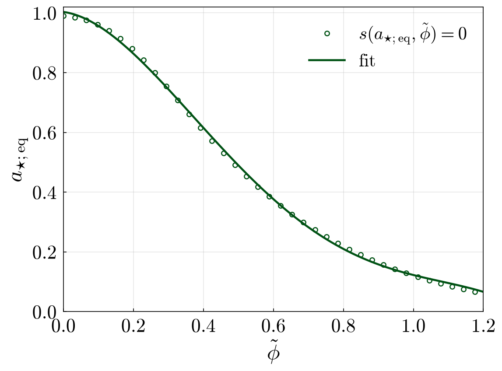
图注：平衡自旋随归一 MAD 参数的变化。圆点是净自旋增长参数等于零的根，实线为式 4 的拟合。
怎么看这张图：从弱磁向饱和比较曲线；每一点的磁通是条件，图上没有给任何单个黑洞的时间演化。 展示核心结果及适用边界
来源与置信度：arXiv HTML；source verified；https://arxiv.org/html/2610.38673v1/figures/aeq_vs_phitilde.png
9. Unifying stochastic and deterministic signals: a practical search for the intermittent binary black-hole background
- 来源：arXiv / astro-ph.HE
- 链接：https://arxiv.org/abs/2610.38766
- 作者：Tore Boybeyi, Vuk Mandic, Joseph Romano
- 公告 / 来源日期：2026-10-30
- 阅读层级：相关简报
- 评分：novelty 8/10，importance 8/10，relevance 7/10，final 8.65/10
- 推荐理由：多阶跨频率统计保留未分辨双黑洞事件信息，真实设计响应的年模拟验证，而非宣称实测背景。
中文题目：让未分辨双黑洞并合保留跨频相关：间歇引力波背景的可计算似然
问题、方法与结论：相对于彼此相隔较久的并合，单个双黑洞的扫频信号很短。作者把双探测器似然比做截断展开，对距离、方向等外禀参数边缘化，用加权高阶互矩和广义重叠约化函数保留同一并合在不同频箱间的相干关系。用 O4 功率谱形状的一年模拟、注入双黑洞族群验证，加入已检出目录的版本能约束注入的并合红移分布峰。
意义与贡献：普通随机背景互相关主要测频率对角的整体功率；这里新增的信息来自少数跨频扫频形状，而不只是更多互相关点。结果说明弱事件的统计建模可和已分辨目录互补，未声称已经从实际 LVK 数据发现这个背景。
可借鉴之处：可把候选时段分成已知含强事件、未解析与噪声，通过同一总体模型比较；模拟中还可关掉跨频项检验信息来自何处。报告截断阶数、单事件阈值和目录条件，比只报一个增长的贝叶斯因子更容易复现。
局限与关注点：模拟为已知谱的平稳高斯噪声，两站使用相同谱形；真实非高斯瞬变、非平稳谱与波形失配可能也在频率间产生相关。弱事件近似稀疏且与注入总体相配，不能把一年敏感度结论直接外推实测。
图10
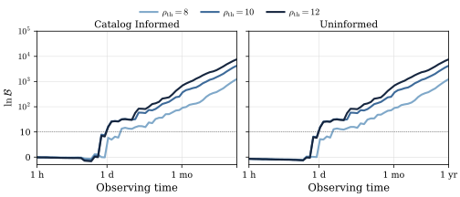
图注：目录辅助（左）和不利用目录（右）的对数贝叶斯因子随观测时间，比较三种单事件阈值，最高截断阶 120。横点线标对数贝叶斯因子 10，纵轴在此上下分别为线性、对数。
怎么看这张图：先对齐纵轴口径和阈值，再比较证据何时累积；图为带注入的模拟时间，不是已经上线的实际观测。 展示核心结果及适用边界
来源与置信度：arXiv HTML；source verified；https://arxiv.org/html/2610.38766v1/time_thresholds.svg
10. A universal relation predicts the observed reversal of a supernova chirp
- 来源：arXiv / astro-ph.HE
- 链接：https://arxiv.org/abs/2610.39240
- 作者：Joseph R. Farah, Logan J. Prust, Hang Yu
- 公告 / 来源日期：2026-10-30
- 阅读层级：相关简报
- 评分：novelty 8/10，importance 8/10，relevance 7/10，final 8.65/10
- 推荐理由：预先关系预言SN2024afav调制频率反转并由五个新起伏核查，值得区分机制相容和唯一识别。
中文题目：SN 2024afav 的亮度振荡先加快再减慢：晚期数据检验早期预言
问题、方法与结论：超亮超新星 SN 2024afav 早期光变振荡周期缩短。作者将磁星衰减与进动盘调制联系，用亮度下降和周期导数的无归一关系，只拟合此前公布的振荡，预言源静止系约 133±20 天处达到最短周期。随后晚期新增五个极值与反转相容；考虑抛射物扩散和红移后，联合最短时刻约 132±3 天，周期由约 23±3 天回升至 35±2 天。
意义与贡献：关键证据是先冻结早段预测、再看晚段，而不只是全光变里事后找一个弯曲周期。指定红噪声模型的模拟很少产生相似行为；这使磁星供能的盘调制比单一衰减振幅更值得检验，但仍是一例源。
可借鉴之处：可复用的检查是分别拟合平滑光变、测极值时刻及校正光子扩散，再将早期参数后验传播到预留时段。用静止系时标比较理论；摘要报告的约 147 天反转为另一时间口径，不应同 132 天当作不一致事件。
局限与关注点：作者由反转斜率在所设进动和盘族内支持热平流内盘，未直接解析盘或磁星。低模拟概率取决于红噪声处方、取样及极值检验，扩散校正也受抛射物模型影响；不能把这一证据宣布所有超亮超新星同机制。
图3
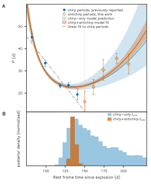
图注：SN 2024afav 的周期反转预测与后续测量。A 中蓝色为先前极值及其外推，橙色为晚期新增；B 比较只用早期与联用晚期得到的最短时刻后验。使用扩散校正及源静止系时间。
怎么看这张图：比较新增点与蓝色预测带，不仅看事后联合曲线。这里对照的是最小周期时刻，不是直接观测盘进动。 展示核心结果及适用边界
来源与置信度：arXiv HTML；source verified；https://arxiv.org/html/2610.39240v1/prediction.svg
11. RAKI: High-Order Alternative Finite Differences for General Relativistic Magnetohydrodynamics
- 来源：arXiv / astro-ph.HE
- 链接：https://arxiv.org/abs/2610.39792
- 作者：Rahime Matur, Beyhan Karakas, Ian Hawke, Nils Andersson
- 公告 / 来源日期：2026-10-30
- 阅读层级：相关简报
- 评分：novelty 8/10，importance 8/10，relevance 7/10，final 8.65/10
- 推荐理由：非交错矢势高阶GRMHD在磁星/并合测试同时量化磁能损失、相位收敛及散度。
中文题目：在非交错网格上守住无磁单极约束：RAKI 的并合数值验证
问题、方法与结论：RAKI 在 Einstein Toolkit 中实现自适应阶数 WENO 的替代有限差分，以节点上的矢势得到磁场，目标是高阶精度与激波稳定同时满足。平滑圆偏振 Alfvén 波测试可到九阶；在磁化静态中子星对照中同分辨率磁场损失明显降低，约 2 ms 时保留初始最大场的 99.2%。双中子星的第五阶重建中，引力波相位在旋近阶段显示约三阶收敛。
意义与贡献：重要贡献是将离散无磁单极条件和移动网格细化结合，在测试中保持到机器精度，并把平滑测试的形式阶数和真实并合的有效阶数分开。结果提供一条减小磁耗散的数值路线，没有从测试数据确定并合后磁场的天体真实演化。
可借鉴之处：新实现要并列看平滑波、激波、磁环平流、星体平衡和并合波形；尤其用三种分辨率相位差检验收敛，而不是只比彩图。机器精度的离散散度并不自动消除重建、细化边界或低分辨率导致的实际误差。
局限与关注点：相位阶数对应指定模型和旋近阶段，不能外推激波附近和晚期湍流。现工作用理想 GRMHD；更真实有限温度、成分 EOS、有限电阻率和不同磁场拓扑是后续计划，不应写作已验证的物理预测。
图11
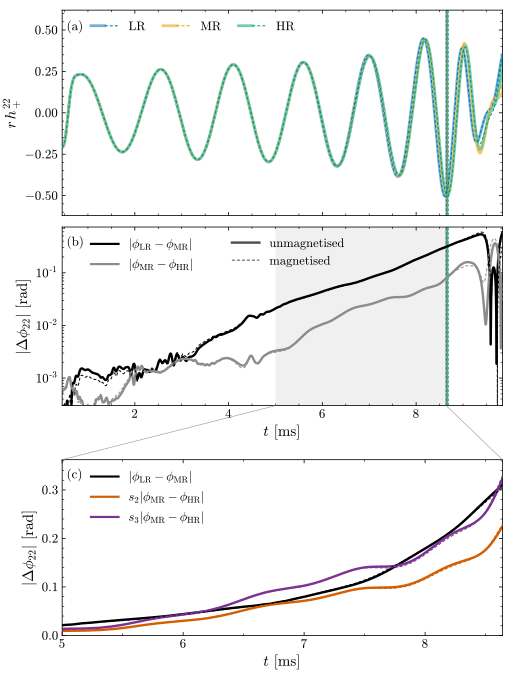
图注：磁化和非磁化双中子星算例的引力波应变与相位收敛。上排比较三种分辨率的波形，中排比较相邻分辨率的相位差，下排放大约 5 ms 至并合的相位比较。
怎么看这张图：重标相位差是否贴合用来判断该阶段收敛阶数；不把平滑波测试的九阶用于这张图。 展示核心结果及适用边界
来源与置信度：arXiv HTML；source verified；https://arxiv.org/html/2610.39792v1/raki_bns_gw.svg
12. A Spectral-model-independent Diagnostic of Phase-resolved Spectral Convergence in Swift J0243.6+6124
- 来源：arXiv / astro-ph.HE
- 链接：https://arxiv.org/abs/2610.38232
- 作者：Bo-Yan Chen, Peng-Ju Wang, Shu Zhang, Ling-Da Kong, Long Ji, Shuang-Nan Zhang, Hua Feng, Yu-Peng Chen
- 公告 / 来源日期：2026-10-30
- 阅读层级：相关简报
- 评分：novelty 7/10，importance 7/10，relevance 8/10，final 8.35/10
- 推荐理由：相反脉冲相位谱形趋同再分叉是可重复诊断，直接约束亮吸积脉冲星辐射几何变化。
中文题目：不先选连续谱模型，怎样看 Swift J0243.6+6124 的两个脉冲相位重新分开
问题、方法与结论：作者用慧眼 Insight–HXMT 对 2018、2019、2023 三次爆发观测，在 2–50 keV 比较两个相隔半周期的相位窗。先归一去掉总流量，再计算分箱谱形的加权均方分数差 δrms。随 2–150 keV 光度上升，谱形差先下降，在约 8.8×10³⁷ erg/s 附近达到几个百分点，然后重新增大，尤见于 30–50 keV；相近处还有主脉峰反转。
意义与贡献：三次爆发复现的非单调变化让同一系统的几何改变有了不依赖选定连续谱模型的诊断。它不直接判定柱状辐射、表面再处理和遮挡各占多少；论文所述约 2% 是量级，分能段与历元的最低值并不完全相同。
可借鉴之处：可在到时质心和轨道校正后对齐脉形，采用相同能区、分箱和相位窗，再对谱统计误差重采样。2018 年用两个窄峰相位窗也得到同类趋势；这是检查宽窗稀释的对照，不能用宽/窄窗同时出现重复计显著性。
局限与关注点：指标仍依赖能带、仪器响应、相位对齐与采用的 5.2 kpc 距离，去掉归一也使其不能测发射功率。光度转折与再处理／柱辐射重分配相容，但无唯一几何反演。PDF 标注正式发表 9 月 4 日，本期采用 10 月 30 日 arXiv 公告日期。
图2
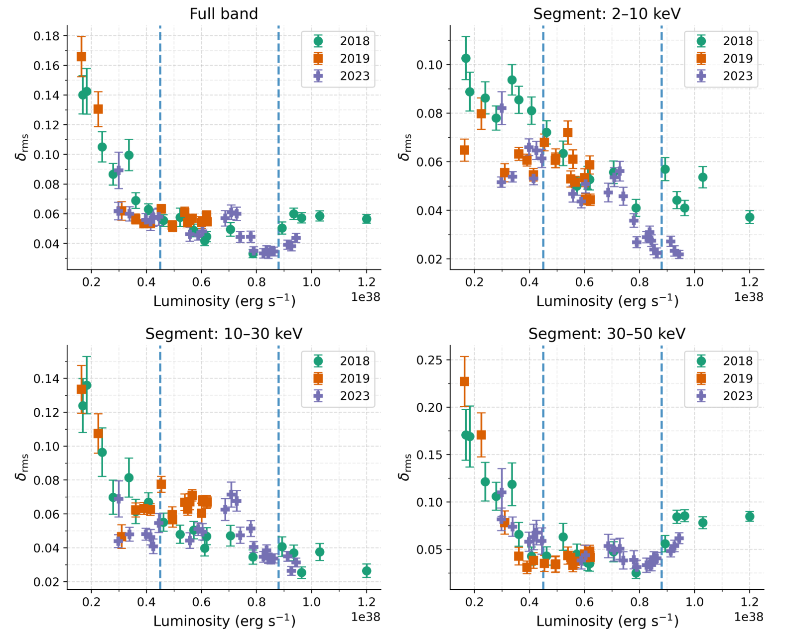
图注：两个半周期相位窗的谱形差 δrms 随光度。四格分别为 2–50 keV 全带及 2–10、10–30、30–50 keV 子带；误差棒是蒙特卡洛传播的 90% 区间，竖虚线为两处既有光谱转折光度。
怎么看这张图：看全带的整体收敛，再看最高能带重分离；低能最低值不应套给所有面板。 完整四面板直接比较谱形差与光度
来源与置信度：arXiv PDF / full four-panel figure crop；source verified；https://arxiv.org/pdf/2610.38232#page=4
13. The Disk Awakens: IXPE's Sequel Observation of GS 1354-64 Suggests Changing-Look Behavior in the Steep-Power-Law State
- 来源：arXiv / astro-ph.HE
- 链接：https://arxiv.org/abs/2610.39384
- 作者：Swati Ravi, James F. Steiner, Megan Masterson, Lorenzo Marra, Philip Kaaret, Alexandra Veledina, Michal Dovciak, Adam Ingram
- 公告 / 来源日期：2026-10-30
- 阅读层级：相关简报
- 评分：novelty 7/10，importance 7/10，relevance 8/10，final 8.35/10
- 推荐理由：IXPE后续暴发态偏振与宽谷同步谱变化提出可检验内盘变化，改变视线和结构仍退化。
中文题目：GS 1354−64 衰减时出现两条亮度轨道：偏振和热盘权重怎样变化
问题、方法与结论：同一次完整爆发的后续 IXPE 观测覆盖衰减陡幂律态。2–8 keV 偏振度约 2.3±0.2%，低于较早中间态约 3.9%，方向相容且 C 型准周期振荡消失。后续光变中的宽低谷对应硬度—强度平面另一轨道；联合谱可用更冷、表观归一更小的盘描述，拟合不要求康普顿分量的指数和归一在两轨道改变。
意义与贡献：较早中间态到陡幂律态的变化与陡幂律态内部反复的高低轨道是两层现象。低谷持续小时至天，且谱偏振行为不同于普通短吸收谷；提示盘与冕的可见权重可能重排，但不足以唯一指定物理机制。
可借鉴之处：把分轨道的 Stokes 谱、能量依赖偏振和总强度一起比较，而非仅用强度图分类。独立模型中高、低轨道偏振斜率分别约每 keV 1.5 和 0.7 个百分点；低轨道不确定度较大，需以联合后验衡量。
局限与关注点：盘归一依赖距离、倾角、着色修正等，不能直接认作内半径真实缩小。文中的变脸类比是盘冕耗散改变的可能性，低谷轨道间偏振差仅边缘提示；该源仍有康普顿尾，不能称纯热软态。
图5
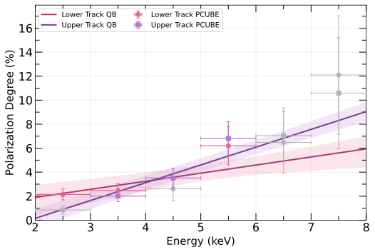
图注：陡幂律态上、下轨道偏振度随能量。紫方和粉圆为 PCUBE 分箱估计，低于 3σ 的点用灰色；实线是 QUEEN-BEE 能量演化估计，阴影为非对称 90% 可信区间。
怎么看这张图：先看带宽内两条带是否重叠；斜率差异比历元间平均偏振差更弱，不宜用同一显著性描述。 展示核心结果及适用边界
来源与置信度：arXiv HTML；source verified；https://arxiv.org/html/2610.39384v1/1354_pd_vs_energy_upper_and_lower.svg
说明
评分由 LLM 给出初评，再由本地阈值策略过滤；IACT、TeV 伽马射线和高能中微子天文学按重点方向处理。